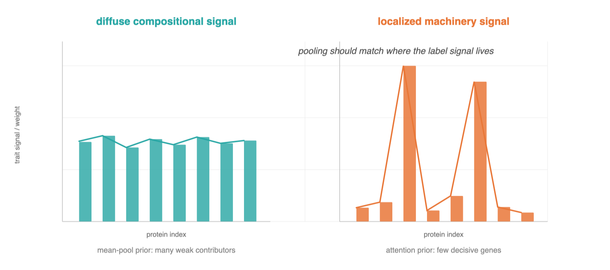
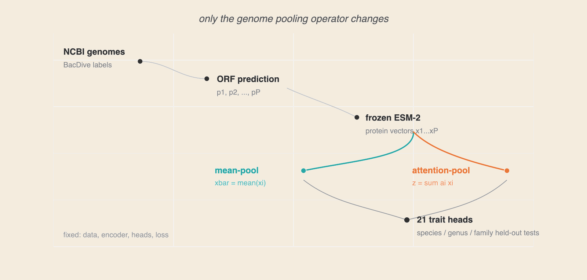
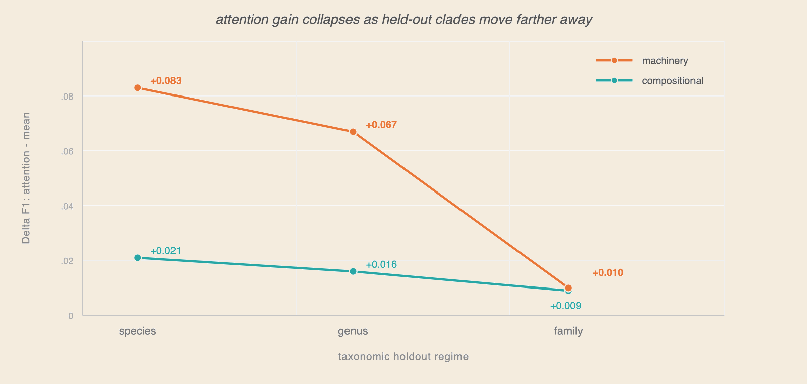
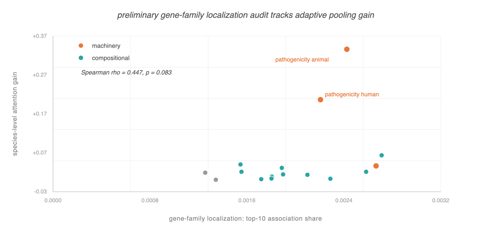
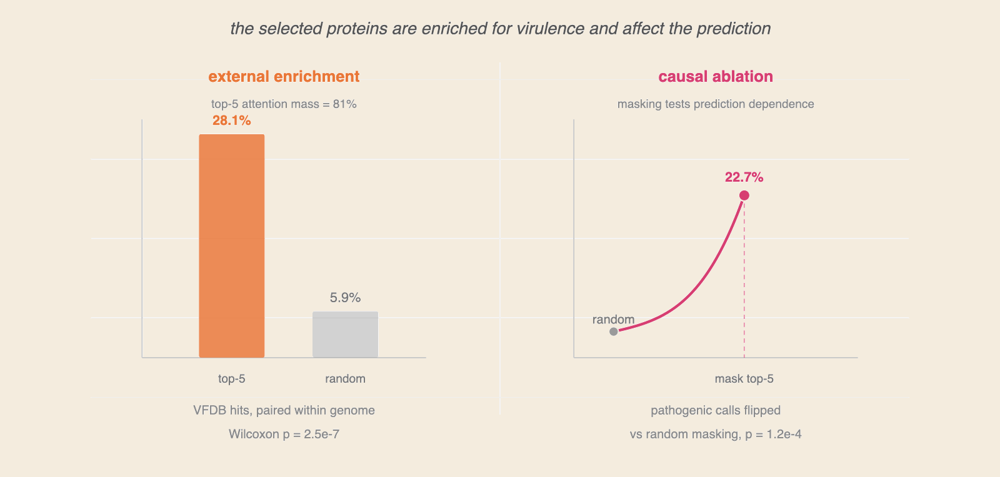

When Does Attention Help in Genomic Trait Prediction?
The predictability gradient — adaptive pooling helps in proportion to how localized a trait's genomic signal is, and collapses under cross-clade distribution shift.
Abstract
A bacterial genome is a set of proteins, and predicting phenotype from that set requires pooling thousands of protein representations into one genome vector. We ask when the pooling choice matters. We propose the predictability gradient hypothesis: adaptive pooling helps in proportion to how localized a trait's genomic signal is. Diffuse compositional traits should be largely insensitive to learned attention; localized machinery traits should benefit. We test this by freezing ESM-2 protein embeddings and varying only the pooling operator across 19,592 bacterial genomes, 21 traits, three taxonomic holdout regimes, and three seeds.
Attention-pooling improves machinery traits ~4× more than compositional traits at species/genus holdout, but the advantage collapses at family holdout, identifying cross-clade generalization as the binding constraint. We add two reviewer-facing diagnostics: a scalar-trait gene-family localization audit, which is directionally consistent with the gradient, and a taxonomy-majority baseline, which exposes substantial clade confounding on pathogenicity. For pathogenicity, top-attended proteins are enriched for VFDB virulence factors under matched controls and predictions are intervention-sensitive to masking those proteins. The result is not a new pooling method; it is a diagnostic framework for deciding when set aggregation architecture is worth its cost and when distribution shift overwhelms it.
When does the pooling choice matter?
Foundation models for bacterial genomes have advanced rapidly: protein language models such as ESM-2 produce rich per-protein representations, and recent genome-level models aggregate them to predict phenotype. A genome, however, is not a sequence but an unordered set of P proteins (P ≈ 10³–10⁴), so every such model must pool a variable-size set of protein vectors into one genome representation before prediction. This pooling step is almost always chosen by convention — typically a mean — and almost never studied.
This is a missed opportunity, because pooling encodes a strong inductive bias about where a trait's signal lives in the genome. Mean-pooling assumes the signal is diffuse: every protein contributes equally. Attention-pooling assumes the signal is localized: the model learns to up-weight a few decisive proteins. Which bias is correct is not a universal fact; it depends on the trait. Whether a bacterium is Gram-positive is a property of its entire cell envelope; whether it is pathogenic can hinge on a single secretion system.
The predictability-gradient hypothesis
We formalize this as the predictability gradient hypothesis: the benefit of attention-pooling over mean-pooling for a trait is proportional to how localized that trait's genomic determinants are. Diffuse "compositional" traits gain little; gene-specific "machinery" traits gain much. The hypothesis is attractive because it is falsifiable inside a single architecture: hold the encoder fixed, swap only the pooling, and measure the gain as a function of trait localization.
We pre-register a partition of the 21 BacDive heads into compositional (11 traits, signal expected diffuse — gram stain, cell shape, motility, sporulation, oxygen tolerance, catalase, cytochrome oxidase, temperature class, pH class, halophily, pigmentation) and machinery (8 traits, signal expected gene-localized — pathogenicity, cultivation medium, carbon utilization, metabolite production, antimicrobial-resistance phenotype, biosafety level, FAME profile), from biological first principles and before seeing any pooling results.

A deliberately narrow experiment

For each strain with an NCBI genome we predict open reading frames with pyrodigal and embed each protein independently with a frozen ESM-2 encoder, producing a ragged protein-representation set per genome. A shared MLP encoder feeds 21 linear heads under a masked multi-task loss that contributes zero gradient for missing labels. The only architectural variable is the pooling: mean-pool (an unweighted average) versus attention-pool (a learned scalar scorer producing a masked softmax over real proteins). Both share encoder, heads, and loss; only pooling differs. This deliberately narrow comparison is the reason the result can be interpreted as a pooling effect rather than an encoder effect. The training corpus contains 19,592 genomes and approximately 82M protein representations.
We evaluate under species-, genus-, and family-held-out splits: no species (resp. genus, family) appears in more than one fold. Family-held-out approximates prediction for clades unlike anything seen in training — the regime relevant to uncultured "microbial dark matter." We report macro-F1 per head and, for the gradient, ΔF1 = F1attn − F1mean, aggregated within trait class, mean ± std over three seeds.
Contributions
- The predictability-gradient hypothesis and its validation. A testable account of when set-pooling architecture matters for genomic prediction, confirmed on 19,592 genomes / 21 traits with three seeds: attention helps machinery traits ~4× more than compositional traits, with non-overlapping error bars.
- A quantitative localization audit. On a 6,738-genome eggNOG subset, a scalar-trait gene-family concentration proxy is directionally correlated with species-level attention gain (Spearman ρ = 0.447, p = 0.083), supporting but not yet completing the main-track version of the localization claim.
- A covariate-shift and taxonomy-confounding result. The gradient is strong within taxonomic distribution and weakens at family level, while a taxonomy-majority baseline reveals that pathogenicity is heavily clade-confounded.
- Mechanistic attribution against a virulence-factor database. For pathogenicity, attention concentrates (81% mass on 5 of ~3,800 proteins) and is enriched for VFDB virulence factors under two controls; masking shows model dependence on those proteins; the hits are coherent adherence/invasion machinery.
- An evaluation protocol for trait-localization hypotheses. A compact, reusable experimental pattern for testing whether architectural changes help because the relevant phenotype is diffuse, localized, taxonomically confounded, or shifted out of distribution.
We are explicit about what this is not: not a new encoder (we freeze ESM-2), not a state-of-the-art benchmark sweep, and not a solution to cross-clade generalization, which our own results show is the open problem.
What the evaluation shows
At the species and genus levels the machinery gain exceeds the compositional gain by ~4×, with non-overlapping error bars (species: +0.083 ± 0.012 machinery vs. +0.021 ± 0.002 compositional). The compositional gain is small, positive, and tight; attention does not hurt diffuse traits, it simply adds little — exactly as the hypothesis predicts. The single largest per-head effects are pathogenicity (animal F1 0.26 → 0.50, human 0.16 → 0.32 at species), the most gene-localized traits in the set.
The most consequential result is the family row. As the test distribution moves from same-species to same-family to novel-family organisms, the machinery advantage decays monotonically (+0.083 → +0.067 → +0.010) until the gradient is effectively gone (gap +0.001). Mean- and attention-pooling become indistinguishable precisely in the regime that matters for uncultured organisms. This localizes the bottleneck: the limiting factor is not how we pool proteins but whether any protein-set representation transfers across evolutionary distance.


A deliberately simple taxonomy-majority baseline sharpens the interpretation: on species-held-out pathogenicity it reaches macro-F1 0.730 (animal) and 0.647 (human), exceeding the attention model — pathogenicity prediction in BacDive is simultaneously a localized-gene task and a taxonomically confounded one. Finally, single-task attention-pool pathogenicity models discriminate well on held-out genomes (AUROC 0.88 animal, 0.85 human), and their top-attended proteins are externally validated against VFDB virulence factors under matched controls and intervention masking.

Keywords — set learning · attention pooling · protein language models · genomic trait prediction · covariate shift · BacDive · ESM-2 · uncultivated microorganisms
Cite
@article{horiuchi2026predictability,
title = {When Does Attention Help in Genomic Trait Prediction?},
author = {Horiuchi, Miyu},
year = {2026},
note = {replicater.xyz/writing/attention-genomic-trait-prediction}
}